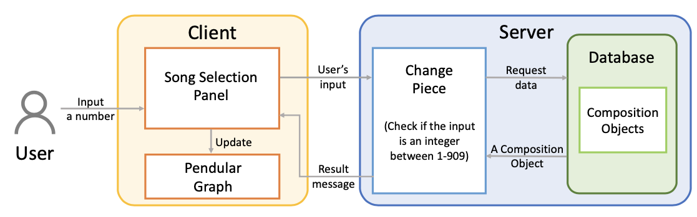
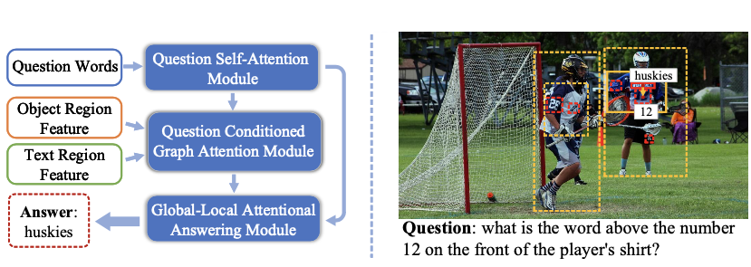
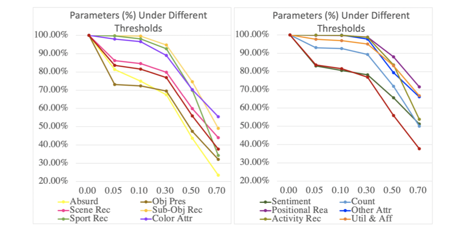
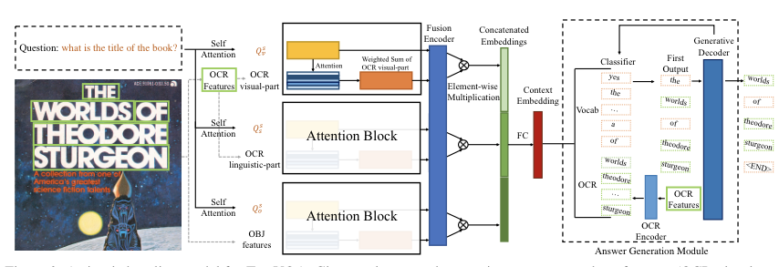
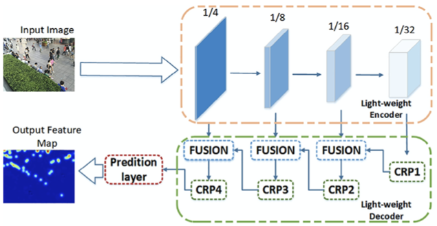

Research Interests
Chenyu's main research interests comprise:
- Machine learning applied to music, including but not limited to human-centered music generation.
- Discovery of repetitive patterns in music.
Education
- Ph.D. in Music2022.10 - Exp. 2026.9
University of York, United Kingdom. Supervisors Dr. Tom Collins, and Dr. Federico Reuben.
- MSc in Software Engineering 2019.9 - 2022.3
Northwestern Polytechnical University, China
Thesis: Research on Vision-and-Language Methods for Images with Scene Text
- BS in Software Engineering 2015.9 - 2019.6
Northwestern Polytechnical University, China
Thesis: Lightweight Target Counting Neural Network Model
Publication
Music Structure Analysis
Music Structure Visualisation

Multimodal Machine Learning
Vision and Language



Crowd Analysis
Crowd Counting, Localization

ArXiv
Pre-print, Technical Report
Awards
- The Outstanding Master's Graduate Award of Shaanxi Province, 2022.
- The Outstanding Master's Graduate Award of Northwestern Polytechnical University, 2022.
- National Scholarship for Graduate Students, 2020.
- 1ST Place in the CVPR 2020 TextVQA Challenge
- The ACM-ICPC Asia Regional Contest Urumqi Site Bronze Medal, 2017.
- The ACM-ICPC China Invitational Contest Bronze Medal, 2017.
- The ACM-ICPC Asia Regional Contest Qingdao Site Bronze Medal, 2016.
Academic Activities
Conference Reviewers
International Society for Music Information Retrieval Conference (ISMIR), 2022-2023
Journal Reviewers
Music & Science
Update: Aug. 2023 by Chenyu Gao